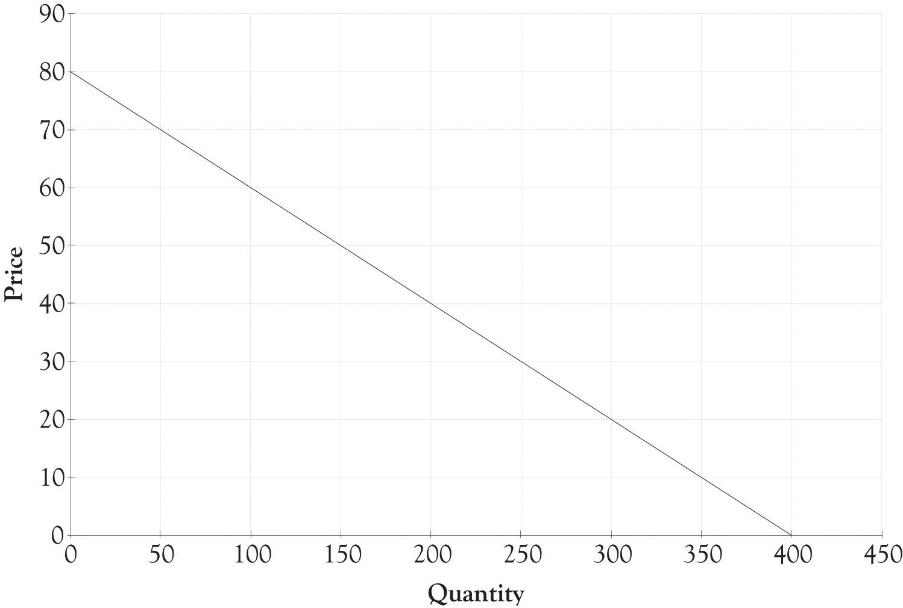
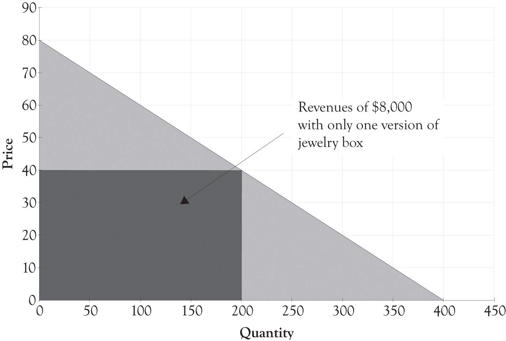

Joan started out as a tinkerer in her garage. She had a band saw and a table saw and started making wooden toys for her kids. She then decided to make a jewelry box for her daughter. Her daughter and husband were so impressed that she showed the box to all of her family and friends. Word started to get around and soon Joan was getting calls to make the jewelry boxes for numerous customers. She sold the jewelry box for a flat price of $40. It costs Joan about $20 for the wood, the fasteners, and decorations. Joan made a tidy little profit of $20 per box. She enjoyed being a craftsperson and enjoyed the extra income.
Joan worked as an economist for the city government and decided she would like to start a side business making jewelry boxes. She named her business Joan’s Handcrafted Jewelry Boxes. Joan subsequently started applying her economic training to launching her jewelry box business.
She knew that understanding how much consumers are willing-to-pay for different products and services was critical to running any business. Over the course of several years, Joan had offered the jewelry box at several different prices and, as a result, she had a good feel for the demand for her jewelry boxes at different price levels. She also had many discussions with her customers and potential customers on the amount they would be willing to pay for a jewelry box. She would actually ask her friends and customers how much they would be willing to pay for pearl inlays, exotic woods, and gold-plated hinges. Joan would sometimes send out questionnaires to customers who bought her jewelry boxes asking them what they liked and did not like about their jewelry box.
Joan took the task of understanding consumer preferences and the demand for jewelry boxes very seriously. Joan went so far as to sell her jewelry boxes with different woods and features on a local Internet auction. The Internet auction gave her very precise information on how much customers would be willing to pay for the jewelry box features. Joan had a friend who was in the jewelry business and she also asked her about market demand.
Joan took all the information, integrated it with local demographic and economic information, and developed a forecastTo calculate or predict a future condition based on pertinent data. and demand curve for her jewelry boxes in the surrounding county. There were approximately 720,000 families in the region and Joan estimated that she could, at most, sell to 0.5% of these families over the course of a year in the current economic environment. She was confident that income levels would not change dramatically over the next year. Joan then used all these information to develop a monthly demand curve for jewelry boxes.
Figure 3.1 "Demand Curve for Jewelry Box" presents a 1-month demand curve for Joan’s jewelry boxes in her county. The curve was derived after Joan determined that if she charged $60 she could sell 100 units, at $40 she could sell 200 units, and at $20 she could sell 300 units. Joan also spent time examining all the costs that she would incur building the jewelry boxes in her newly remodeled garage. Her garage was now a small factory. She found that the variable and fixed costs are different for each type of jewelry box. After spending considerable time examining the costs and the revenues, Joan decided to sell only one type of jewelry box at a price of $40.
Figure 3.1 Demand Curve for Jewelry Box
Figure 3.2 Revenue With One Type of Jewelry Box Selling for $40
Joan determined that she could make a small profit by selling the box for $40. The revenue generated by selling only one model of her jewelry box is illustrated in Figure 3.2 "Revenue With One Type of Jewelry Box Selling for $40". Her fixed costsCosts that do not change regardless of sales. , consisting of rent, utilities, and tool maintenance, would run about $2,000. The variable costsExpenses that change according to production output. for the wood, fasteners, and decorations would be about $15 when bought in bulk quantities. The monthly revenue from the business would be $8,000 ($40 × 200) and the profit from the business would be $3,000. The contribution marginThe amount remaining from sales revenues after deducting all variable expenses. is the difference between the selling price and the variable cost to produce each jewelry box. The contribution margin for each jewelry box is $25. The calculations for profit, using q as the quantity and p as the price, are as follows:
Total revenue = p × q Total revenue = $40 × 200 Total revenue = $8,000 Profit = Total revenue − Total variable costs − Total fixed costs Profit = p × q − Vc × q − Fc Profit = $40 × 200 − $15 × 200 − $2,000 Profit = $8,000 − $3,000 − $2,000 Profit = $3,000